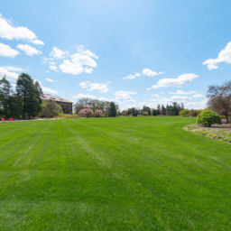
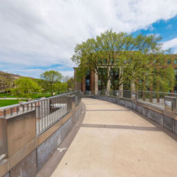

Explore Minneapolis, Saint Paul, or both campuses through photographs and the stories of the places they show.
Discover the East Bank and West Bank, from Northrop Mall to the banks of the Mississippi.

Visit the Saint Paul campus, its gardens, learning spaces, and community gathering places.

Follow the full tour across both campuses and the Twin Cities places that connect them.